📸 Galería de estudio
Imágenes anatómicas y de referencia organizadas por categoría para complementar tu estudio.
 Anatomía
Anatomía
Anatomía del cráneo
Huesos del neurocráneo y viscerocráneo
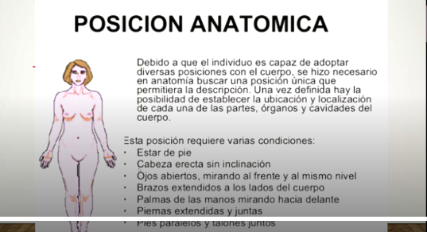
DactiloscopiaClasificación de huellas
Arco, presilla, verticilo y mixto
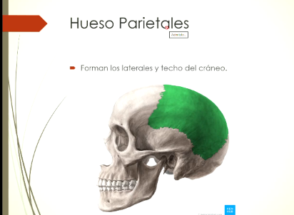
FisionómicoPuntos somatométricos
Glabela, Nasion, Sub-nasal, Pogonion
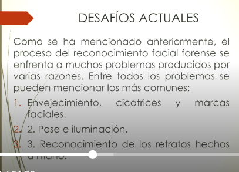
CráneoBase del cráneo
Esfenoides, silla turca y foramen magnum
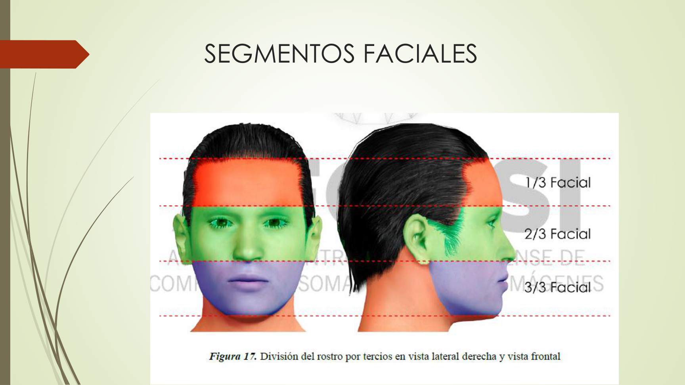
FacialSegmentos faciales
Tercios superior, medio e inferior del rostro
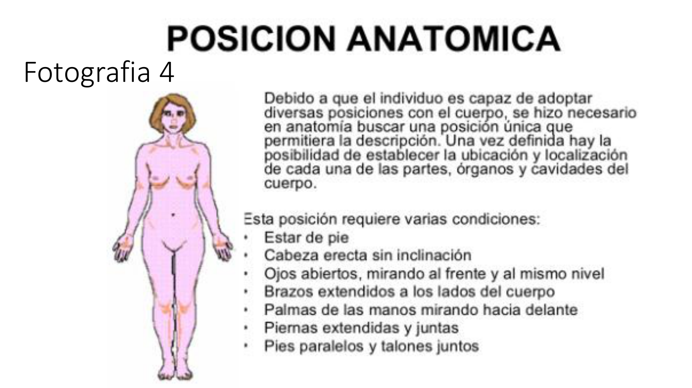
AnatomíaPosición anatómica
Planos sagital, frontal y transversal
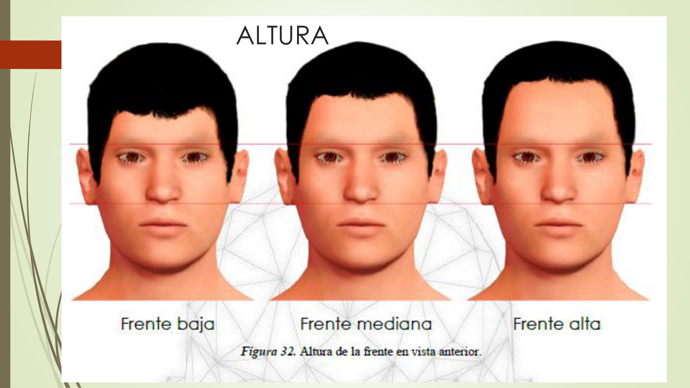
RetratoAnálisis de frente
Altura, anchura e inclinación frontal
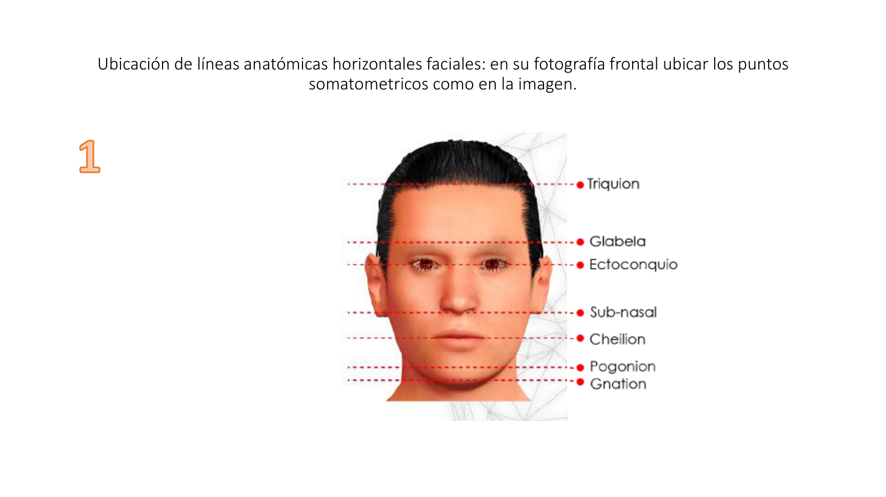
FacialLíneas de referencia
Líneas horizontales y verticales del rostro
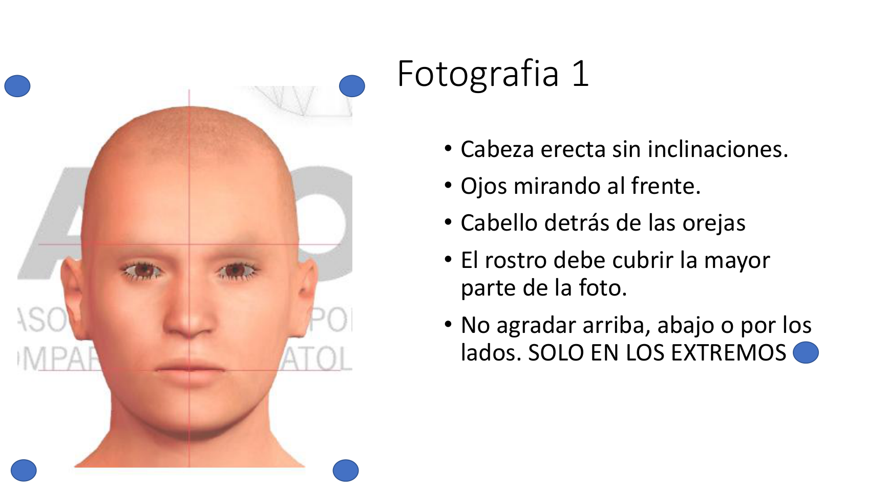
CotejoFotografía frontal forense
Referencia para análisis morfocomparativo
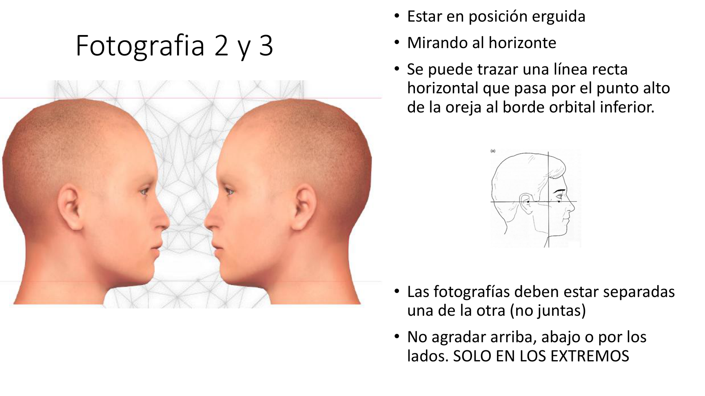
CotejoFotografía de perfil forense
Referencia para análisis de plano facial
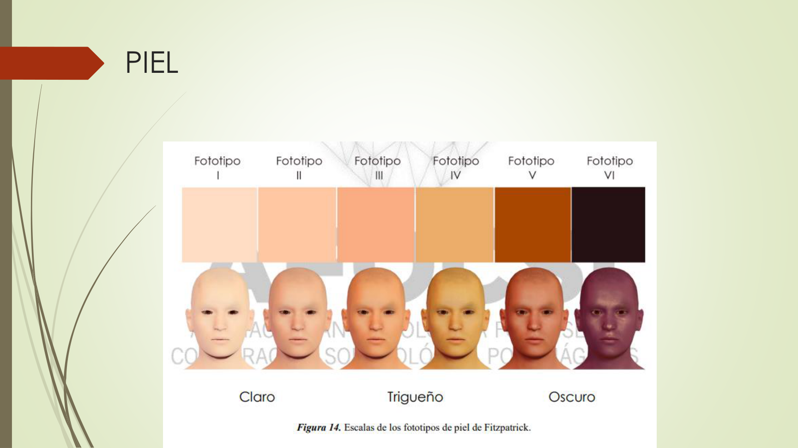
PielFototipos de piel
Clasificación según escala de Fitzpatrick
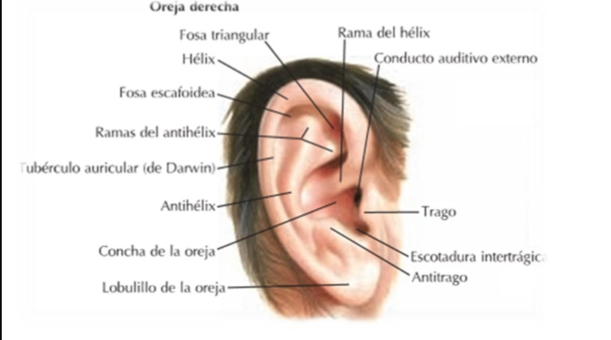
OrejaPabellón auricular
Hélix, Antihélix, Trago, Antitrago, Lóbulo, Concha
📝 Artículos y fundamentos legales
Ley 50 — Servicios Periciales
Regula la función de los peritos y la presentación de informes periciales. Fundamento legal del retrato hablado.
Art. 326 CPP — Reconocimiento como acto de investigación
Marco general para los actos de reconocimiento de personas dentro del proceso penal.
Art. 327 CPP — Interrogatorio previo
Prohíbe mostrar imágenes del sospechoso antes del acto de reconocimiento para evitar contaminación visual.
Art. 328 CPP — Rueda de detenidos
Mínimo 6 personas con rasgos similares al investigado. Observación desde cámara Gesell.
Art. 330 CPP — Reconocimiento fotográfico
Mínimo 10 fotografías (imputado + 9 distractores). Regulado para evitar sesgos en la identificación.
Art. 385 CP — Falso testimonio
Prisión de 2 a 4 años. Si afecta sentencia condenatoria: 4 a 8 años. Se lee al reconocedor antes del acto.
Art. 410 CPP — Informe pericial
Regula la presentación de informes periciales. Deben ser claros, objetivos y fundamentados científicamente.